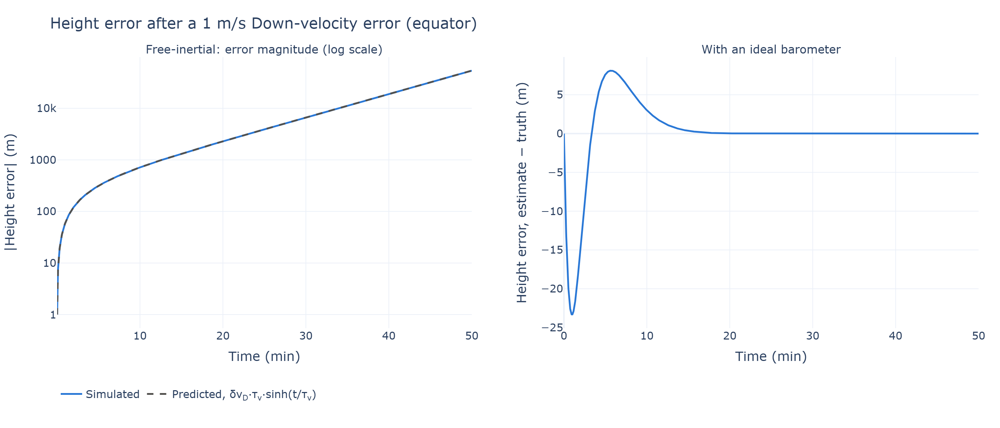

Vertical channel¶
Height is the one direction in which an INS cannot navigate on its own for long. Gravity weakens with height, so a navigator that believes it is higher than it is computes too little gravity. The resulting acceleration error pushes it higher still, and the error grows exponentially, with a time constant of under ten minutes. Every practical INS therefore blends in a height measurement, usually from a barometric altimeter. ins_sim does this with a third-order damping loop, which is on by default. Untick Baro altitude aiding in the GUI to watch the free-inertial vertical channel diverge.
Key results
- Free-inertial, a height error grows as \(\sinh(t/\tau_v)\), with \(\tau_v\) = 573 s at the equator. A 1 m/s vertical-velocity error becomes 6.6 km of height error in 30 minutes.
- The barometric loop places all three of its poles at \(-1/\tau\), with \(\tau\) = 100 s. The same 1 m/s error then causes a 23 m transient that dies away within about 20 minutes.
- The loop's integrator cancels a constant vertical accelerometer bias.
- The barometer in ins_sim is ideal: it reports the true height. Aided vertical errors are therefore optimistic.
Physical picture¶
flowchart LR
BARO["Barometric height<br/>h̃<sub>b</sub>"] --> SUM(("−"))
INS["INS height<br/>h<sub>b</sub>"] --> SUM
SUM -->|"residual"| K1["K<sub>1</sub>: correct the height"]
SUM --> K2["K<sub>2</sub>: correct the vertical velocity"]
SUM --> K3["K<sub>3</sub>: integrate into a<br/>vertical-acceleration correction"]Without a height reference, the vertical channel is a positive feedback loop. A height error \(\delta h_b\) makes the computed gravity wrong by the free-air gradient, \(-(2g/R_0)\,\delta h_b\): too weak if the navigator is too high. Too little gravity means a computed upward acceleration, which makes the height error grow faster.
With a barometric altimeter, the navigator compares its height with the barometer's and feeds the difference back into three places: the height itself, the vertical velocity, and an integrator that learns any steady vertical-acceleration error, such as an accelerometer bias.
Continuous-time model¶
The free-inertial instability¶
Linearizing the vertical velocity equation about the true trajectory gives the height error's dynamics:
where:
- \(\delta h_b\) is the height error [m] and \(\delta f_D\) the error in the Down specific force [m/s²];
- \(R_0\) is the equatorial radius [m] and \(\omega_{ie}\) the Earth rotation rate [rad/s];
- \(\tau_v\) is the time constant of the divergence [s].
The first term is the gravity gradient. The second, much smaller, is Coriolis coupling: a vertical velocity error causes an East velocity error through the Earth's rotation, which in turn feeds back into the vertical. From a vertical velocity error \(\delta v_D(0)\) and no other error,
and from a constant Down accelerometer bias \(b_D\), \(\delta h_b(t) = -b_D\,\tau_v^2\left(\cosh(t/\tau_v) - 1\right)\). Both grow by a factor of \(e\) every 9.5 minutes.
The barometric damping loop¶
Writing \(\tilde h_b\) for the barometric height, the loop adds three corrections, driven by the residual \(r = h_b - \tilde h_b\):
where:
- \(r\) is the residual, INS height minus barometric height [m];
- \(\left(\dot v_D\right)_\text{inertial}\) is the Down component of the velocity equation on Strapdown mechanization [m/s²];
- \(a_c\) is the integrator's vertical-acceleration correction [m/s²];
- \(\tau\) is the loop's time constant, 100 s by default [s].
If the INS is too high (\(r > 0\)), the loop lowers its height directly through \(K_1\), commands a descent through \(K_2\), and slowly builds up a downward acceleration through \(K_3\). With an ideal barometer the residual is the height error itself, and the closed loop's error dynamics have the characteristic polynomial
The gravity gradient \(2g/R_0\) is only 1% of \(K_2\) at \(\tau\) = 100 s, so the three poles sit very close to \(-1/\tau\): critically damped, without oscillation. For a vertical velocity error \(\delta v_D(0)\) the height error is then
which reaches \(-0.23\,\delta v_D(0)\,\tau\) at \(t = 0.59\,\tau\), changes sign at \(t = 2\tau\), and overshoots by \(+0.08\,\delta v_D(0)\,\tau\) at \(t = 3.4\,\tau\). A constant accelerometer bias leaves no steady height error: the integrator settles at \(a_c = -b_D\).
As implemented¶
1. Gains, set once from baro_tau:
# Third-order baro-damping gains: triple pole at -1/baro_tau for the
# (height error, vertical-velocity error, accel-error integrator) loop.
if meas_h_b is not None:
K1 = 3.0 / baro_tau
K2 = 3.0 / baro_tau ** 2
K3 = 1.0 / baro_tau ** 3
acc_corr = 0.0 # integral state [m/s²], → -δa_D
2. Vertical velocity and integrator. Inside the velocity update, the residual corrects the Down acceleration through \(K_2\) and the integrator, and the integrator accumulates \(K_3\,r\):
# --- 5. Rotating-frame velocity update ------------------------
coriolis = np.cross(2.0 * omega_ie_n + omega_en_n, v_eb_n[k])
v_eb_n_dot = f_ib_n - coriolis + g_b_n
# Baro damping: the height residual corrects vertical velocity
# (K2) and updates the accel-error integrator (K3); a positive
# residual (INS high) commands positive Down velocity.
if meas_h_b is not None:
baro_residual = h_b[k] - meas_h_b[k]
v_eb_n_dot[2] += K2 * baro_residual + acc_corr
acc_corr += K3 * baro_residual * tau_i
v_eb_n[k+1] = v_eb_n[k] + v_eb_n_dot * tau_i
3. Height. Inside the position update, the residual corrects the height through \(K_1\):
# --- 6. Curvilinear position (forward Euler — matches truth) --
R_N, R_E = wgs84_radii(L_b[k])
L_b[k+1] = L_b[k] + (v_eb_n[k][0] / (R_N + h_b[k])) * tau_i
lambda_b[k+1] = lambda_b[k] + (v_eb_n[k][1] /
((R_E + h_b[k]) * np.cos(L_b[k]))) * tau_i
h_b[k+1] = h_b[k] - v_eb_n[k][2] * tau_i
if meas_h_b is not None:
h_b[k+1] -= K1 * baro_residual * tau_i
Compared with Groves (2013)
Groves1 explains the vertical channel's instability and barometric height measurement, and combines sensors with Kalman filters. ins_sim instead uses a classical fixed-gain, third-order baro-inertial loop2, with its gains chosen to place a triple pole.
What it looks like¶

A level IMU at rest at the equator, with a 1 m/s Down-velocity error and no other error. Free-inertial, the height error follows the \(\sinh\) prediction, reaching 6.6 km after 30 minutes; its fitted time constant is within 0.1% of \(\tau_v\). With the barometric loop it peaks at 23 m and decays, as the closed form above predicts. Both are checks on the Validation page.
Assumptions & limitations¶
Assumptions & limitations
- An ideal barometer. The aiding height is the true height, with no noise, bias or lag. A real barometric altimeter's errors, from the pressure setting and from non-standard temperature, typically amount to tens of metres and would pass straight into the INS height. The aided vertical errors in ins_sim are therefore optimistic.
- Fixed gains. The loop does not adapt to the quality of the
barometer; \(\tau\) is fixed at 100 s in the GUI. The Python API
accepts other values through
baro_tau. - Coupling neglected in the closed forms. The pole placement ignores the gravity gradient and the Coriolis coupling with the East channel. The simulation includes both, which is why it departs from the closed form by about 1%.
In the code¶
| Quantity | Equation | Implemented in |
|---|---|---|
| Loop gains and corrections | \(K_1\), \(K_2\), \(K_3\), \(a_c\) | strapdown_navgrade, arguments meas_h_b and baro_tau |
| Barometric height | \(\tilde h_b\), the true height | run_monte_carlo, argument baro_aiding |
| Gravity gradient | \(-2g/R_0\) | normal_gravity |
This example applies a 1 m/s Down-velocity error to a level IMU at rest at the equator and compares the simulated height error with both closed forms:
"""A 1 m/s Down-velocity error, free-inertial and with an ideal barometer."""
import numpy as np
from scipy.spatial.transform import Rotation
from ins_sim.core.earth_model import WGS84_A, WGS84_OMEGA, earth_rate_n, normal_gravity
from ins_sim.navigation.strapdown import NavState, strapdown_navgrade
L_b, tau_i, M = 0.0, 1.0, 1801 # 30 minutes at the equator
g = normal_gravity(L_b, 0.0)
omega_ib_b = np.tile(earth_rate_n(L_b), (M, 1)) # a level IMU at rest
f_ib_b = np.tile([0.0, 0.0, -g], (M, 1))
start = NavState(L_b, 0.0, 0.0, np.array([0.0, 0.0, 1.0]), # v_D wrong by 1 m/s
Rotation.identity().as_quat())
free = strapdown_navgrade(omega_ib_b, f_ib_b, start, tau_i).h_b
aided = strapdown_navgrade(omega_ib_b, f_ib_b, start, tau_i, meas_h_b=np.zeros(M)).h_b
tau_v = 1.0 / np.sqrt(2.0 * g / WGS84_A - 4.0 * WGS84_OMEGA**2) # free-inertial
tau = 100.0 # baro loop
print(f"Free-inertial time constant tau_v = {tau_v:.1f} s")
print("Height error [m] free-inertial baro-aided")
print("t [min] simulated predicted simulated predicted")
for minutes in (2, 5, 10, 20, 30):
t = minutes * 60.0
k = int(t / tau_i)
predicted_free = -tau_v * np.sinh(t / tau_v)
predicted_aided = -t * np.exp(-t / tau) * (1.0 - t / (2.0 * tau))
print(f"{minutes:7d} {free[k]:10.1f} {predicted_free:10.1f}"
f" {round(aided[k], 1) + 0.0:10.1f} {round(predicted_aided, 1) + 0.0:10.1f}")
Free-inertial time constant tau_v = 573.0 s
Height error [m] free-inertial baro-aided
t [min] simulated predicted simulated predicted
2 -120.9 -120.9 -14.6 -14.5
5 -313.8 -313.9 7.6 7.5
10 -715.2 -715.8 3.0 3.0
20 -2287.4 -2290.8 0.0 0.0
30 -6604.7 -6615.5 0.0 0.0
References¶
-
Groves (2013), Chapter 5 for the instability of the vertical channel, and Chapter 6 for barometric height measurement. ↩